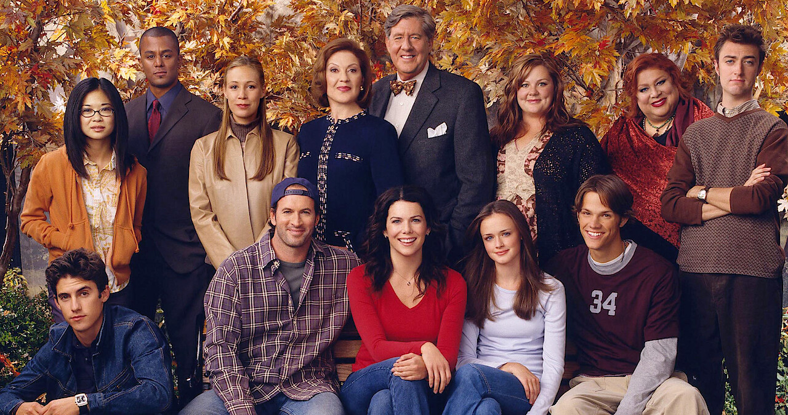
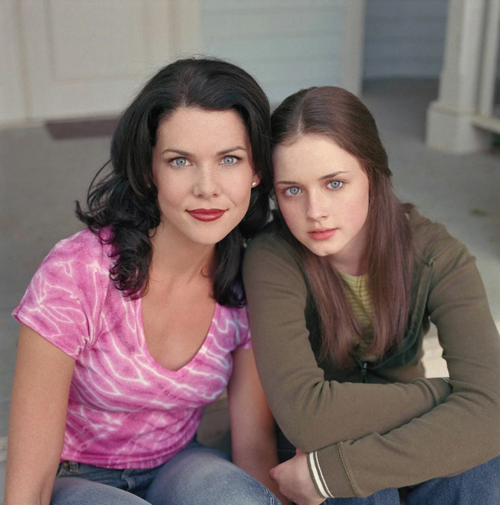
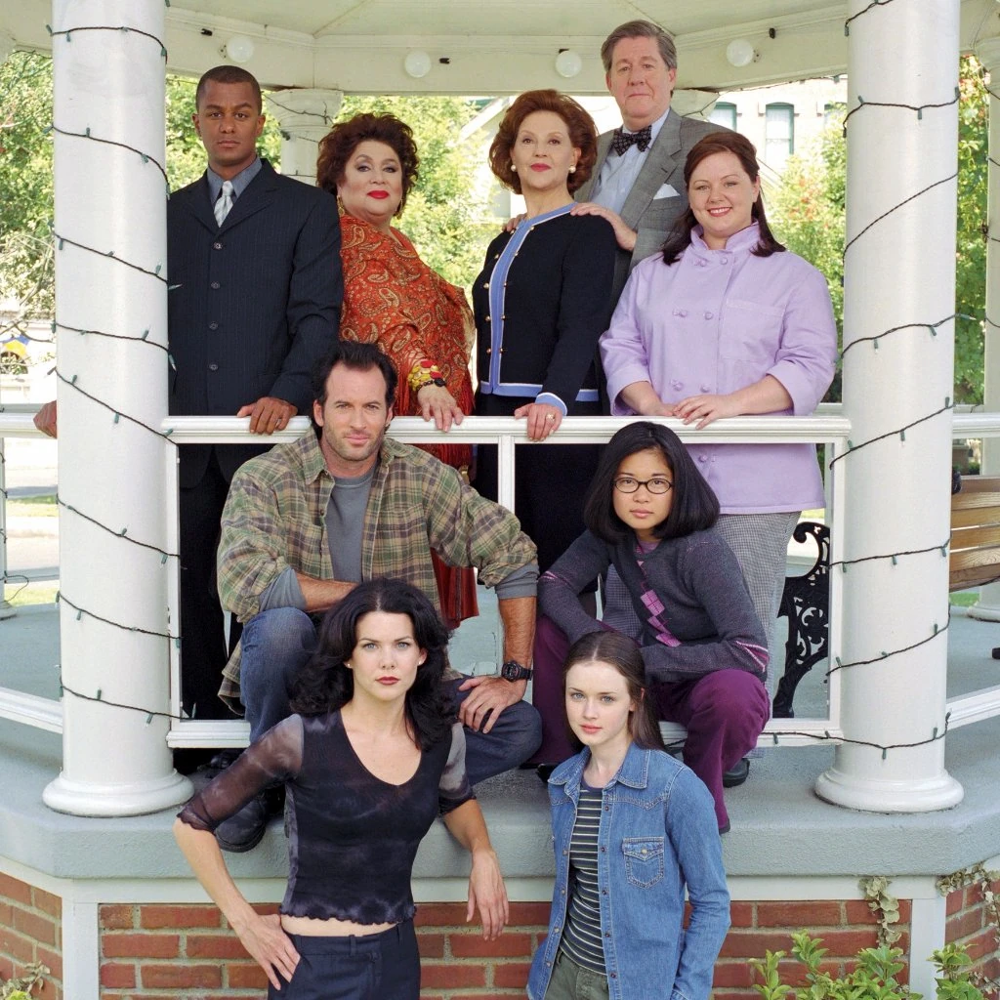

Gilmore Girls is an American comedy-drama television series created by Amy Sherman-Palladino. It stars Lauren Graham and Alexis Bledel as Lorelai Gilmore and Rory Gilmore, a mother–daughter pair as the main characters. The series also stars an ensemble supporting cast, including Melissa McCarthy as Sookie, Lorelai’s best friend; Kelly Bishop as Emily Gilmore, Lorelai’s mother; Edward Herrmann as Richard Gilmore, Lorelai’s father; Liza Weil as Paris Geller, Rory’s “best friend”; Scott Patterson as Luke Danes, Lorelai’s constant love interest throughout the show; Keiko Agena as Lane Kim, Rory’s best friend; among many, many others like Lorelai and Rory’s different love interests, their family members, other friends, and townspeople.
Set in the fictional small Connecticut town of Stars Hollow, populated by a close-knit community of eccentric residents, the series blends elements of family drama, romance, and comedy. The series follows the personal and professional lives of its central characters as they navigate relationships, ambitions, and generational differences. Gilmore Girls follows the lives of single mother Lorelai Gilmore and her academically minded teenage daughter, Lorelai “Rory” Gilmore, living in the quaint fictional town of Stars Hollow, Connecticut.

Lorelai and Rory share a bond that is almost indescribably close — a mixture of mother–daughter, best friends, and partners in life. Because Lorelai had Rory at sixteen and raised her alone, their relationship grew without the usual parental distance; instead, it's built on shared humor, trust, and a deep emotional dependence. They choose each other every day, not out of obligation but out of genuine connection. Yet beneath the banter and closeness, the show constantly reminds us that Lorelai is still Rory’s mother. When they drift apart — especially during major life transitions — it feels seismic because their relationship was built on exclusivity and understanding.
Richard and Emily serve as the emotional counterweight to this duo, embodying the world Lorelai rejected but the one Rory steps into with curiosity and charm. They adore Rory, seeing in her a second chance at parenting without the mistakes they made with Lorelai. Their relationship with Lorelai, however, is layered with years of misunderstanding, disappointment, and unspoken longing. Every Friday-night dinner becomes a negotiation between love and resentment, tradition and independence.
Together, the four form a complex family portrait: Lorelai and Rory’s fierce, free-spirited bond contrasted with Richard and Emily’s structured, legacy-driven love. Despite conflicts, they remain tied by longing, pride, and a constant desire to reconnect — proving that even imperfect families can hold extraordinary love.

Amy Sherman-Palladino, who came from a background of writing for half-hour sitcoms, had Gilmore Girls approved by The WB after several of her previous pitches were turned down. On a whim, she suggested a show about a mother and daughter but had put little thought into the idea. Having to create a pilot, she drew inspiration for the show’s setting of “Stars Hollow, Connecticut” after making a trip to Washington, Connecticut, where she stayed at the Mayflower Inn.
She explained: “If I can make people feel this much of what I felt walking around this fairy town, I thought that would be wonderful … At the time I was there, it was beautiful, it was magical, and it was a feeling of warmth and small-town camaraderie … There was a longing for that in my own life, and I thought— that’s something that I would really love to put out there.” That’s the thing about this show, it’s just too comforting.
Once the setting was established, Gilmore Girls developed as a mixture of sitcom and family drama. Sherman-Palladino's aim was to create "A family show that doesn't make parents want to stick something sharp in their eyes while they're watching it and doesn't talk down to kids." She wanted the family dynamic to be important because "It's a constant evolution … You never run out of conflict."

Alexis Bledel was cast in the key role of Rory despite having no previous acting experience. Sherman-Palladino was drawn to her shyness and innocence, which she said was essential for the character, and felt she photographed well. Lauren Graham was pursued by the casting directors from the start of the process, but she was committed to another show. A week before the shooting, they had still failed to cast Lorelai, so they asked Graham to audition anyway. Sherman-Palladino cast her that day, on the hope that Graham's other show would be canceled, which it soon was. She later explained how Graham met all the criteria she had been looking for: "Lorelai's a hard fucking part. You've got to be funny, you've got to talk really fucking fast, you've got to be able to act, you've got to be sexy, but not scary sexy. You've got to be strong, but not like 'I hate men'." Graham and Bledel only met the night before they started filming the pilot.
In casting the grandparents, Sherman-Palladino had veteran actor Edward Herrmann in mind for Richard and was delighted when he agreed. Kelly Bishop, a fellow New York stage actress, was cast straight after her audition; Sherman-Palladino recalled knowing immediately "and there’s Emily". Herrmann and Bishop had previously shared a common familiarity with each other as both were Tony Award recipients in 1976.